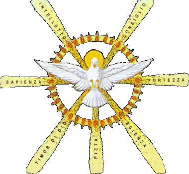

ROSARIO SPIRITO SANTO
† Nel nome del Padre e del Figlio e dello Spirito Santo. Amen.

† Santo Spirito, scendi su di noi e rendici partecipi dei tuoi doni: donaci l'intelligenza, perché possiamo riconoscere le cose belle che Dio ha creato; donaci la sapienza, per sapere accogliere con gioia gli insegnamenti di Dio; donaci la scienza, per vedere i fratelli come la via più breve per giungere a Dio; donaci la forza, per essere sempre testimoni della bontà di Dio; donaci la pietà, per ricordarci che Dio è nostro Padre; donaci il consiglio, per saper scegliere sempre il bene; donaci il timor di Dio, per comportarci, sempre, come piace a lui. Amen.
† O Dio, vieni a salvarmi. Signore vieni presto in mio aiuto.
† Gloria al Padre e al Figlio e allo Spirito Santo come era nel principio, e ora e sempre nei secoli dei secoli, Amen
(1) Gesù è concepito per opera dello Spirito Santo nel seno della vergine Maria.
L'angelo le disse: «Non temere, Maria, perché hai trovato grazia presso Dio. Ecco concepirai un figlio, lo darai alla luce e lo chiamerai Gesù. Sarà grande e chiamato Figlio dell'Altissimo; il Signore Dio gli darà il trono di Davide suo padre e regnerà per sempre sulla casa di Giacobbe e il suo regno non avrà fine». Allora Maria disse all'angelo: «Come è possibile? Non conosco uomo». Le rispose l'angelo: «Lo Spirito Santo scenderà su di te, su te stenderà la sua ombra la potenza dell'Altissimo. Colui che nascerà sarà dunque santo e chiamato Figlio di Dio. (Lc 1,30–35)
(2) Gesù è consacrato Messia al Giordano dallo Spirito Santo.
Quando tutto il popolo fu battezzato e mentre Gesù, ricevuto anche lui il battesimo, stava in preghiera, il cielo si aprì e scese su di lui lo Spirito Santo in apparenza corporea, come di colomba, e vi fu una voce dal cielo: «Tu sei il mio figlio prediletto, in te mi sono compiaciuto». (Lc 3,21–22)
(3) Gesù muore in croce per togliere il peccato e dona lo Spirito Santo.
Dopo questo, Gesù, sapendo che ogni cosa era stata ormai compiuta, disse per adempiere la Scrittura: «Ho sete». Vi era lì un vaso pieno d'aceto; posero perciò una spugna imbevuta di aceto in cima a una canna e gliela accostarono alla bocca. E dopo aver ricevuto l'aceto, Gesù disse: «Tutto è compiuto!». E, chinato il capo, spirò. (Gv 19,28-30)
(4) Gesù dona agli Apostoli lo Spirito santo per la remissione dei peccati.
La sera di quello stesso giorno, il primo dopo il sabato, mentre erano chiuse le porte del luogo dove si trovavano i discepoli per timore dei Giudei, venne Gesù, si fermò in mezzo a loro e disse: «Pace a voi!». Detto questo, mostrò loro le mani e il costato. E i discepoli gioirono al vedere il Signore. Gesù disse loro di nuovo: «Pace a voi! Come il Padre ha mandato me, anch'io mando voi». Dopo aver detto questo, alitò su di loro e disse: «Ricevete lo Spirito Santo; a chi rimetterete i peccati saranno rimessi e a chi non li rimetterete, resteranno non rimessi». (Gv 20,19–23)
(5) Il Padre e Gesù, a Pentecoste, effondono lo Spirito Santo: la Chiesa, costituita in potenza, si apre alla missione nel mondo.
Mentre il giorno di Pentecoste stava per finire, si trovavano tutti insieme nello stesso luogo. Venne all'improvviso dal cielo un rombo, come di vento che si abbatte gagliardo, e riempì tutta la casa dove si trovavano. Apparvero loro lingue come di fuoco che si dividevano e si posarono su ciascuno di loro; ed essi furono tutti pieni di Spirito Santo e cominciarono a parlare in altre lingue come lo Spirito dava loro il potere d'esprimersi. Si trovavano allora in Gerusalemme Giudei osservanti di ogni nazione che è sotto il cielo. Venuto quel fragore, la folla si radunò e rimase sbigottita perché ciascuno li sentiva parlare la propria lingua. Erano stupefatti e fuori di sé per lo stupore dicevano: «Costoro che parlano non sono forse tutti Galilei? E com'è che li sentiamo ciascuno parlare la nostra lingua nativa? Siamo Parti, Medi, Elamìti e abitanti della Mesopotamia, della Giudea, della Cappadòcia, del Ponto e dell'Asia, della Frigia e della Panfilia, dell'Egitto e delle parti della Libia vicino a Cirène, stranieri di Roma, Ebrei e prosèliti, Cretesi e Arabi e li udiamo annunziare nelle nostre lingue le grandi opere di Dio». Tutti erano stupiti e perplessi, chiedendosi l'un l'altro: «Che significa questo?». Altri invece li deridevano e dicevano: «Si sono ubriacati di mosto». (Atti 2,1–13)
(6) Lo Spirito santo scende per la prima volta sui pagani.
Pietro prese la parola e disse: «In verità sto rendendomi conto che Dio non fa preferenze di persone, ma chi lo teme e pratica la giustizia, a qualunque popolo appartenga, è a lui accetto. Questa è la parola che egli ha inviato ai figli d'Israele, recando la buona novella della pace, per mezzo di Gesù Cristo, che è il Signore di tutti. Voi conoscete ciò che è accaduto in tutta la Giudea, incominciando dalla Galilea, dopo il battesimo predicato da Giovanni; cioè come Dio consacrò in Spirito Santo e potenza Gesù di Nazaret, il quale passò beneficando e risanando tutti coloro che stavano sotto il potere del diavolo, perché Dio era con lui. E noi siamo testimoni di tutte le cose da lui compiute nella regione dei Giudei e in Gerusalemme. Essi lo uccisero appendendolo a una croce, ma Dio lo ha risuscitato al terzo giorno e volle che apparisse, non a tutto il popolo, ma a testimoni prescelti da Dio, a noi, che abbiamo mangiato e bevuto con lui dopo la sua risurrezione dai morti. E ci ha ordinato di annunziare al popolo e di attestare che egli è il giudice dei vivi e dei morti costituito da Dio. Tutti i profeti gli rendono questa testimonianza: chiunque crede in lui ottiene la remissione dei peccati per mezzo del suo nome». (Il battesimo dei primi pagani) Pietro stava ancora dicendo queste cose, quando lo Spirito Santo scese sopra tutti coloro che ascoltavano il discorso. E i fedeli circoncisi, che erano venuti con Pietro, si meravigliavano che anche sopra i pagani si effondesse il dono dello Spirito Santo; li sentivano infatti parlare lingue e glorificare Dio. Allora Pietro disse: «Forse che si può proibire che siano battezzati con l'acqua questi che hanno ricevuto lo Spirito Santo al pari di noi?». E ordinò che fossero battezzati nel nome di Gesù Cristo. Dopo tutto questo lo pregarono di fermarsi alcuni giorni. (Atti 10,34-48)
(7) Lo Spirito Santo guida la Chiesa di tutti i tempi, dandole i suoi doni e i suoi carismi.
Il frutto dello Spirito invece è amore, gioia, pace, pazienza, benevolenza, bontà, fedeltà, mitezza, dominio di sé; contro queste cose non c'è legge. (Gal 5,22-23);
Come infatti il corpo, pur essendo uno, ha molte membra e tutte le membra, pur essendo molte, sono un corpo solo, così anche Cristo. E in realtà noi tutti siamo stati battezzati in un solo Spirito per formare un solo corpo, Giudei o Greci, schiavi o liberi; e tutti ci siamo abbeverati a un solo Spirito. Ora il corpo non risulta di un membro solo, ma di molte membra. (Cor 12,12-14)
LITANIE DELLO SPIRITO SANTO
† VIENI SPIRITO SANTO, riempi i cuori dei tuoi fedeli e accendi in essi il fuoco del tuo amore.
† Manda il tuo Santo Spirito e sarà una nuova creazione e rinnoverai la faccia della terra.
† Concedi, Padre misericordioso, che il tuo Divino Spirito ci illumini, ci infiammi, ci purifichi, così che Egli possa penetrare in noi con la sua celeste rugiada e riempirci di opere buone. Per i meriti di Gesù, Tuo Figlio, che con te, nell'unità dello Spirito Santo, vive e regna nei secoli dei secoli. Amen
† O Dio, che nel mistero della Pentecoste santifichi la tua Chiesa in ogni popolo e nazione, diffondi i doni dello Spirito Santo sino ai confini della terra e continua oggi, nella comunità dei credenti, i prodigi che hai operato agli inizi della predicazione del Vangelo. Te lo chiediamo per Cristo Nostro Signore. Amen.
CORONCINA
Beata Elena Guerra l’Apostola dello Spirito Santo scrisse questa Coroncina composta da sette invocazioni da recitarsi in sequenza, nelle quali viene rispettivamente invocato lo Spirito di Sapienza, di Intelletto, di Consiglio, di Fortezza, di Scienza, di Pietà e di santo Timore.
E’ una preghiera molto preziosa, perchè ispirata da Dio alla Beata Elena
Guerra, che fu tenuta in grande considerazione da Papa Leone XIII, a cui Elena
scrisse nel 1895 proprio per raccomandare a tutti i cristiani questa preghiera,
affinchè ritornassero a scoprire la potenza dei Doni dello Spirito Santo e la
missione di apostolato: «Al mondo mancano la verità e l’amore, perché il mondo
ha allontanato da sé lo Spirito di Dio. Tutti ammettono che il mondo si sta
dirigendo verso la rovina totale, ma che cosa facciamo per accelerare il
necessario ritorno dello Spirito di Dio nel cuore degli uomini?». L’esperienza
mistica della beata trova connotazione su questa linea bene demarcata in cui lo
Spirito santo le si rivela come amore in atto, amore che amando insegna ad
amare: «La bell’opera di infiammare i cuori di amor di Dio è proprio del
medesimo Amore. Venne l’Amore e l’uomo amò». Gesù accese l’amore nei cuori degli
apostoli quando «mandò a essi lo Spirito santo, cioè l’Amore sostanziale e
personale di Dio stesso».
«Tutti i benefici della redenzione sono di infinita eccellenza, ma quello che di
tutto è compimento e corona è l’infusione dello Spirito di Dio nelle creature»
Lo Spirito di Dio discende nel Figlio per effondersi nell’umanità. Il
Consolatore libera dallo spirito del mondo attraendo a sé, provvedendo a ogni
bisogno con cura e tenerezza. Al centro della spiritualità di Elena Guerra è
posta la rinascita nello Spirito santo che si origina con il battesimo: «Appena
uscita dal grembo di mia madre, Tu, Signore, mi hai abbracciata e lavata con
l’acqua del battesimo rendendomi tua figlia. […] Rinati attraverso l’acqua,
dobbiamo rinascere […] nello Spirito Santo. Solo Tu, Signore, mi puoi far
comprendere e mettere in pratica questa beata rinascita. […] Affinché la mia
vita sia una continua comunione, un’ininterrotta rinascita e una crescita nello
Spirito Santo». Rinascere nello Spirito, rinvia alla «rinascita dall’alto» a cui
accenna il testo giovanneo (Gv 3,3-8), fa pensare allo Spirito santo come a un
abbraccio luminoso che si effonde per accogliere e rigenerare l’intera umanità.
Nel nome del Padre, del Figlio e dello Spirito Santo. Amen.
† O Dio, vieni a salvarmi. Signore vieni presto in mio aiuto.
† Gloria al Padre e al Figlio e allo Spirito Santo come era nel principio, e ora e sempre nei secoli dei secoli, Amen
† Io Credo in Dio, Padre onnipotente, creatore del cielo e della terra; e in Gesù Cristo, suo unico Figlio, nostro Signore, (tutti si inchinino) il quale fu concepito di Spirito Santo, nacque da Maria Vergine, patì sotto Ponzio Pilato, fu crocifisso, morì e fu sepolto; discese agli inferi; il terzo giorno risuscitò da morte; salì al cielo, siede alla destra di Dio Padre onnipotente: di là verrà a giudicare i vivi e i morti. Credo nello Spirito Santo, la santa Chiesa cattolica, la comunione dei Santi, la remissione dei peccati, la risurrezione della carne, la vita eterna. Amen
† Vieni, o Spirito di Sapienza, distaccaci dalle cose della terra, e infondici amore e gusto per le cose del cielo.
Padre Santo, nel nome di Gesù manda il tuo Spirito a rinnovare il mondo.
† Vieni, o Spirito d’Intelletto, rischiara la nostra mente con la luce dell’eterna verità e arricchiscila di santi pensieri.
Padre Santo, nel nome di Gesù manda il tuo Spirito a rinnovare il mondo.
† Vieni, o Spirito di Consiglio, rendici docili alle tue ispirazioni e guidaci sulla via della salute.
Padre Santo, nel nome di Gesù manda il tuo Spirito a rinnovare il mondo.
† Vieni, o Spirito di Fortezza, e dacci forza, costanza e vittoria nelle battaglie contro i nostri spirituali nemici.
Padre Santo, nel nome di Gesù manda il tuo Spirito a rinnovare il mondo.
† Vieni, o Spirito di Scienza, sii Maestro alle anime nostre, e aiutaci a mettere in pratica i tuoi insegnamenti.
Padre Santo, nel nome di Gesù manda il tuo Spirito a rinnovare il mondo.
† Vieni, o Spirito di Pietà, vieni a dimorare nel nostro cuore per possederne e santificarne tutti gli affetti.
Padre Santo, nel nome di Gesù manda il tuo Spirito a rinnovare il mondo.
† Vieni, o Spirito di Santo Timore, regna sulla nostra volontà, e fa che siamo sempre disposti a soffrire ogni male anziché peccare.
Padre Santo, nel nome di Gesù manda il tuo Spirito a rinnovare il mondo.
INVOCAZIONI A MARIA
PER OTTENERE LO SPIRITO SANTO
† O purissima Vergine Maria, che nella tua Immacolata Concezione fosti fatta dallo Spirito Santo eletto Tabernacolo dalla Divinità, prega per noi.
† O purissima Vergine Maria, che nel mistero dell'incarnazione fosti fatta dallo Spirito Santo vera Madre di Dio, prega per noi.
† O purissima Vergine Maria, che stando in orazione con gli Apostoli nel cenacolo, fosti sovrappiena di Spirito Santo, prega per noi.
† Venga il Tuo Spirito, Signore, e ci trasformi interiormente con i Suoi doni: crei in noi un cuore nuovo, affinché possiamo piacere a Te e conformarci alla tua volontà. Per Cristo nostro Signore. Amen.
LITANIE DELLO SPIRITO SANTO
ATTO DI CONSACRAZIONE ALLO SPIRITO SANTO / O divino Spirito, che sei disceso con l’abbondanza dei Tuoi lumi e dei Tuoi doni sulla prima comunità riunita il giorno di Pentecoste fra le mura del Cenacolo, ecco dinanzi a Te questa comunità che Ti supplica di rinnovare su di essa quanto compisti in quel giorno memorando. E affinché questo avvenga, noi ci consacriamo a Te offrendoTi la nostra mente, la nostra volontà, il nostro cuore. L’opera redentrice che Cristo, il Verbo incarnato, ebbe a realizzare soprattutto con la Sua passione e morte e volle affidare alla Sua Chiesa, fu da Te completata con la Pentecoste e mai è venuta meno. Ma affinché in noi sia più intensa e fruttuosa e questa porzione della Chiesa viva un continuo progresso spirituale, noi ci affidiamo senza riserve a Te. La Tua luce illumini le nostre menti, onde cerchiamo sempre la verità e non ci lasciamo traviare da falsi profeti; la Tua grazia ringiovanisca le nostre volontà e le renda capaci di resistere alle insidie del demonio e della corruzione; i Tuoi doni ci trasformino in apostoli con la parola e con l’esempio. O Divino Spirito, ripeti in noi i prodigi della grazia che si verificarono nella prima comunità cristiana alla Tua discesa fa’ che vivendo in te, portiamo alla Chiesa e a Cristo redentore quanti ci circondano, contribuendo così a quel piano meraviglioso di salvezza del genere umano che, nella Pentecoste, ha dato i primi meravigliosi frutti. Amen.